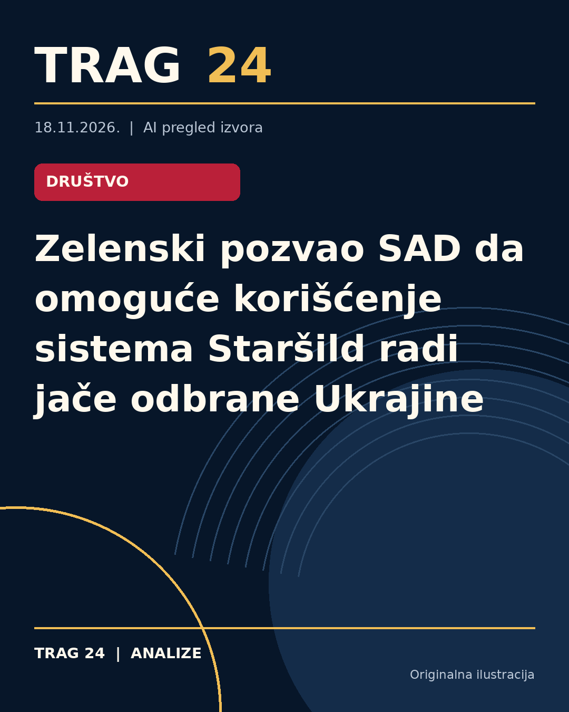

Zelenski pozvao SAD da omoguće korišćenje sistema Staršild radi jače odbrane Ukrajine

ŠTA SE DOGODILO
Ukrajinski predsednik Volodimir Zelenski je u večernjem obraćanju pozvao Sjedinjene Američke Države da omoguće Ukrajini pristup i korišćenje satelitskog komunikacionog i bezbednosnog sistema Staršild. Prema njegovim rečima, ovaj sistem bi mogao pomoći u uništavanju neprijateljskih sistema za lansiranje balističkih raketa, posebno ruskih i severnokorejskih, postavljenih u blizini granice Ukrajine, čime bi se ojačala odbrana zemlje.
HRONOLOGIJA
Zelenski je izneo ovaj zahtev tokom nedavnog obraćanja javnosti. On je istakao da ograničenja u korišćenju sistema Staršild, koje je razvila kompanija SpejsEks, već sedam dana važe na privremeno okupiranim teritorijama Ukrajine. Ukrajinske vlasti su navodno više puta pokušavale da dobiju objašnjenje od Pentagona i SpejsEksa, ali odgovori nisu pristigli. Zelenski je naveo da su razgovori sa američkim partnerima u toku.
ŠTA NAVODE IZVORI
Prema izvorima Ukrinform prezentovanim preko Telegrafa, Insajdera i Novosti, Zelenski je naglasio da je efikasnost sistema Staršild poznata svima i da njegovo korišćenje može biti ključno za efikasnu odbranu. Takođe, navodi se da otvaranje ovog sistema za uništavanje neprijateljskih lansirnih sistema predstavlja suprotan proces u odnosu na trenutno stanje, gde je komunikacija unutar sistema ograničena. Ukrajinski zvaničnici potvrđuju da ni Pentagon ni SpejsEks nisu dali zvanično obrazloženje za postojeća ograničenja.
ŠTA JE POTVRĐENO
Potvrđeno je da je sistem Staršild satelitski komunikacioni sistem razvijen za potrebe državnih, vojnih i obaveštajnih službi SAD i njenih saveznika, te da je trenutno pod ograničenjima u pogledu brzine komunikacije na privremeno okupiranim teritorijama Ukrajine. Takođe je potvrđeno da je ovaj sistem predmet interesovanja ukrajinskih vlasti i da su razgovori sa američkom stranom u toku kako bi se rešila postojeća ograničenja.
ŠTA NIJE POTVRĐENO
Nije potvrđeno da su SAD ili kompanija SpejsEks planirali ili zvanično razmatrali otvaranje punog pristupa ili uklanjanje ograničenja za Staršild u korist Ukrajine. Takođe nije potvrđeno kako su tačno ograničenja na sistem Staršild postavljena i ko ih je uveo. Nema ni zvaničnog stava Pentagona ili SpejsEksa u vezi sa ovim zahtevom Ukrajine.
ŠTA OSTАJE OTVORENO: Ostaje nejasno da li će SAD odgovoriti pozitivno na zahtev Ukrajine za pristup sistemu Staršild i kada bi eventualno takva odluka mogla biti doneta. Takođe nije poznato na koji način bi uključivanje ovog sistema uticalo na dinamiku sukoba, niti koje pravne i bezbednosne implikacije bi imalo njegovo korišćenje u cilju uništavanja neprijateljskih lansirnih sistema.
Izvori
- https://www.telegraf.rs/vesti/svet/4434970-zelenski-pozvao-sad-da-otvore-starsild-kako-bi-ukajina-ojacala-odbranu
- https://insajder.net/prenosimo/zelenski-pozvao-sad-da-otvore-starsild-kako-bi-ukajina-ojacala-odbranu
- https://www.novosti.rs/planeta/svet/1672233/rat-ukrajini-starshield-volodimir-zelenski-spacex-rusija
Ova analiza je pripremljena uz pomoć veštačke inteligencije na osnovu javno dostupnih izvora. Navodi izvora nisu nužno nezavisno potvrđeni.